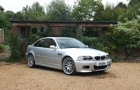
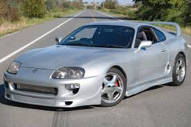
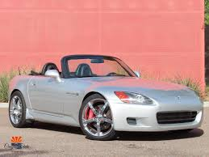
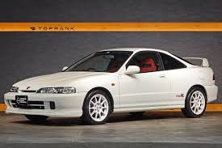
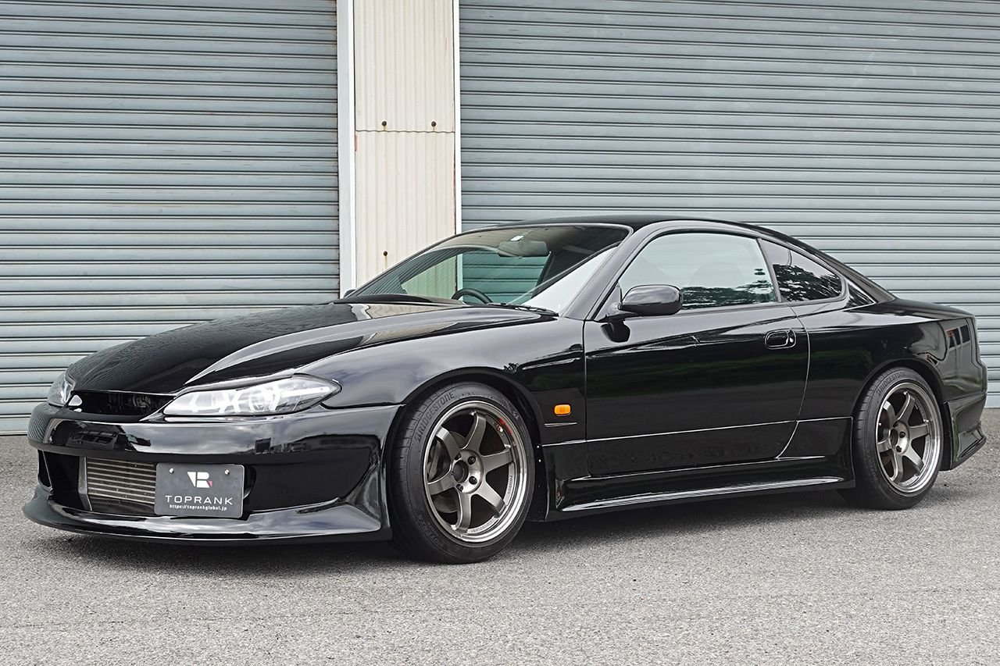

More Enthusiast Favorites
| Car | Year | Why it’s popular | Photo |
|---|---|---|---|
| BMW M3 E46 | 2001-2006 | Photo: 2001 | Balanced RWD sports car known for handling and track performance |  |
| Volkswagen Golf GTI mk4 | 1999-2005 | Photo: 2004 | Affordable turbo hatchback with a large enthusiast community |  |
| Honda S2000 | 1999-2009 | Photo: 2002 | Pattern breaking RWD sports car from Honda |  |
| Subaru WRX STI | 2004-2007 | Photo: 2005 | AWD sports car known for its rally racing heritage | |
| Acura Integra Type R | 1997-2001 | Photo: 2000 | FWD performance car known for its high-revving VTEC engine and excellent handling |  |
| Nissan Silvia S15 | 1999-2002 | Photo: 2000 | Japanese sports car known for drifting performance |  |